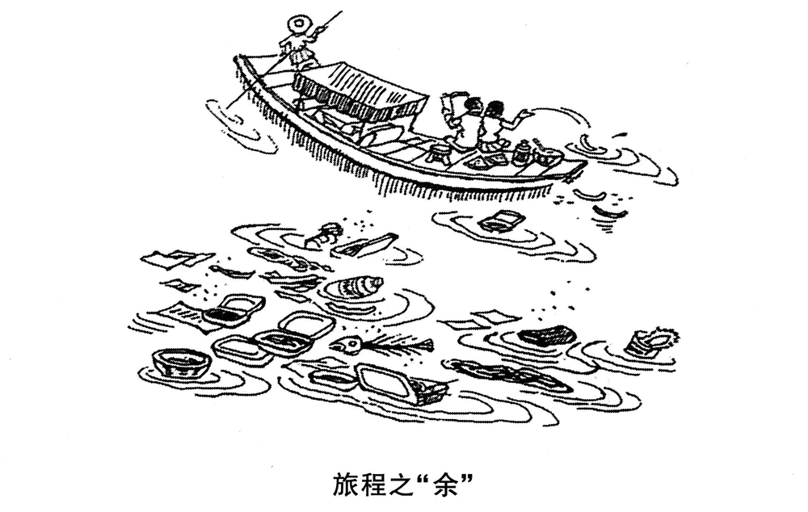

A小作文 · 给朋友的电影推荐信（10 分）
Write a letter to a friend of yours to
1) recommend one of your favorite movies and
2) give reasons for your recommendation.
You should write about 100 words on ANSWER SHEET 2.
Do not sign your own name at the end of the letter. Use “Li Ming” instead.
Do not write the address. (10 points)
💭 审题三件事
- ⭐⭐ 推荐信不是影评。判据很硬：影评回答「它讲了什么」，推荐信回答「你为什么该看它」。信里每一句都该能回答后一个问题。⟹ 剧情最多一句，而且不许剧透结局——剧透了对方就不必看了，推荐的目的当场自毁。100 词里花 40 词复述剧情，是本题最高频的失分。
- ⭐⭐ 必须完成一次视角转换：从「我为什么喜欢」转到「你为什么会喜欢」。题干里两个所有格是错开的——one of your favorite movies（我的）＋ a friend of yours（收信人的）。一封只写自己感受的信是日记，不是推荐信。落笔标志＝信里出现一句对收信人处境的指认（You told me last month that …）。这是 10 分里最贵的一句：它把「推荐」变成「针对你的推荐」。
- 两条理由要一外一内。外层＝可公开验证的（表演、台词、拍法、奖项）；内层＝只有我能提供的（它在什么处境下对我起了什么作用）。只有内层那条才是「推荐」区别于「介绍」的地方——推荐的说服力来自「我用过」。两条都停在外层，信就变成了海报文案。
⭐⭐ 五年 Part A 五种体裁（本页新增 · 第五年不重样）
| 年份 | 体裁 | 读者是谁 | 第一句怎么起 | 落款 | 本年特有的坑 |
|---|---|---|---|---|---|
| 2007 | 建议信 | 校图书馆（机构） | I am writing to put forward several suggestions … | Li Ming | 建议只有口号没有可执行动作；写成投诉信 |
| 2008 | 道歉信 | 具名熟人 Bob | I am writing to apologize for … | Li Ming | 只道歉不给方案；方案没有「动作＋方式＋时间」 |
| 2009 | 致编辑信 | 报社编辑 | I am writing to express my concern about … | Li Ming | 建议里没有一条是编辑自己能办的 |
| 2010 | 通知 NOTICE | 一群人（无称呼） | Volunteers are needed for … | 机构名 | 写 Dear ＝ 体裁错；落款签 Li Ming |
| 2011 本题 | 推荐信 | 未具名的朋友 （名字自己起） | How have you been? I am writing to recommend … | Li Ming | ⭐ 写成影评／剧透结局；通篇只有「我」没有「你」；理由只有一条或两条同质 |
- ⭐⭐ Part A 五年五种，押体裁没用，押「三问」有用：① 读者是一个人、一群人还是机构？（定称呼与语域）② 题干给没给收信人的名字？（定 Dear 后面写什么）③ Do not sign 后面跟的是什么？（定落款）。三问 20 秒答完，格式分就锁死了。
- ⭐ 「同题型连续五年不重样」这是第三条：翻译（词义→词性→语序→固定表达→名词化）、完形（五年五种考点分布）、现在 Part A 也是五年五种体裁。⟹ 不押具体考法，只押把每一种打法练熟。
⚠️ Directions 限定词清算表（开考先圈出来）
小作文 10 分，丢分很少丢在语言上，多半丢在没看见 Directions 里的限定词。本题七个限定词里有三个是数量词——这是往年少见的。
| 限定词 | 它约束什么 | 违反的后果 |
|---|---|---|
| a letter | 体裁＝信：要有称呼、要有落款 | 写成一段独立影评（无 Dear、无 Yours）＝体裁错，语言再好也上不了一档 |
| to a friend of yours | 读者＝朋友，且题干没给名字 | 写 Dear Sir or Madam＝把私信写成公函（语域错）；写 Dear Friend／Dear my friend（my 与 Dear 冲突）＝不地道 ⟹ 自己起一个 Dear Tom |
| one of your favorite movies | 只推一部 | 一口气推三部，100 词里每部只剩 30 词，理由全被摊薄，一条都不深 |
| recommend | 目的＝让对方去看 | 写成剧情梗概或影评：讲它是什么，不讲你为什么该看——本题第一大坑 |
| give reasons | 复数 ⟹ 至少两条 | 只给一条＝要点不全；两条同质（「很好看」「很感人」）＝实质上还是一条 |
| about 100 words | 95–115 最稳 | 低于 80 按档扣；超过 130 挤占大作文时间（20 分才是大头） |
| Do not sign … Use “Li Ming” instead Do not write the address | 落款＝人名 Li Ming；不写地址 | 沿用去年手感落款机构名；签自己的真名有判零风险；写地址不加分，还白占字数 |
🧩 两条理由怎么切：一外一内（本页新增）
「理由不够」几乎从来不是想不出来，而是两条落在同一层。照下表切一刀，两条就自动不同质。
| 层 | 写什么 | 检验它的问题 | 本文写成了哪一句 |
|---|---|---|---|
| 外层 可公开验证 | 表演／台词／拍法／结构／奖项——换个人看也成立 | 这句话陌生人读了会不会点头？ | It has no hero and no special effects … one simple man and one simple habit |
| 内层 只有我能提供 | 它在什么处境下对我起了什么作用——换个人就写不出来 | 这句话只有我写得出来吗？ | The film promises nothing; it only shows that a man can keep going |
| 转向 （第三步，最贵） | 把内层理由挂到收信人的处境上 | 信里有没有出现「你」的具体处境？ | You told me last month that you felt stuck after the exam |
✍️ 范文（ 词 · 🟡 亮点点击看讲解）
Dear Tom,
寒暄+目的How have you been? I am writing to recommend one of my favourite films, Forrest Gump, which I watched again last weekend.
理由一 · 外It has no hero and no special effects. The whole story rests on one simple man and one simple habit: whenever life knocks him down, he gets up and runs.
理由二 · 内 + 转向你More than that, it fits where you are. You told me last month that you felt stuck after the exam. The film promises nothing; it only shows that a man can keep going.
动作收尾I have the disc here. Shall we watch it together this Saturday evening?
Yours,
Li Ming
近来可好？写信是想向你推荐我最喜欢的电影之一——《阿甘正传》，上周末我又看了一遍。
它没有英雄，也没有特效。整个故事只靠一个简单的人和一个简单的习惯撑着：生活每把他打倒一次，他就爬起来跑。
更要紧的是，它正对你眼下的处境。上个月你告诉我，考完试之后你觉得卡住了。这部片子什么都没许诺，它只是让你看见：一个人是可以一直走下去的。
碟就在我这儿。这周六晚上一起看？
此致
李明
- ⭐ 内容写成了影评：整封信在复述剧情（谁是谁、后来怎样），理由段只剩一句 it is very interesting。本题最高频的失分。⟹ 剧情最多一句，而且不许剧透结局：剧透了对方就不必看了，推荐的目的当场自毁。
- ⭐⭐ 内容通篇只有「我」，没有「你」。题干把两个所有格错开写（your favorite movies ／ a friend of yours）就是在提示这件事。没有一句指向收信人的处境，这封信就是日记。
- 要点推了不止一部：题干写的是 one of your favorite movies，一部。三部片各三十词，等于一条理由都没说透。
- 要点理由只有一条，或两条同质。reasons 是复数；「很好看」＋「很感人」是同一条。切法见上表：一外一内。
- ⭐ 语言recommend 的三个搭配坑（本题唯一的高频语法坑）：❌ I recommend you to watch it ⟹ ✅ I recommend that you watch it／I recommend watching it／I recommend it to you（recommend sth to sb，不是 recommend sb sth）。另：be worth watching（worth ＋ doing，不写 worth to watch，也不写 worth to be watched）。
- 语言片名怎么标：手写卷通行的做法是首字母大写＋下划线（Forrest Gump），不写中文书名号《》。拿不准拼写的片名宁可换一部——片名拼错比不写更扎眼。
- 语域两头都别越界：一头是写成公函（Dear Sir or Madam / I would be grateful if you could…），另一头是滑成短信（Hey bro、省略主语、表情符）。给朋友的信可以用缩写、可以用问句，但骨架仍是 Dear ＋ 正文 ＋ Yours ＋ 署名。
- 格式写了地址——题干明令 Do not write the address（2007 也这么写过）；落款签成机构名或真名——本年回到 Li Ming。
- 字数about 100 词：95–115 最稳。本文 词（不含称呼与落款）。
- 第一句给半句寒暄：How have you been? —— 这是私人信与公函的分水岭，只值三个词，却让整封信的语域一次到位。⚠️ 反过来，给机构的信不许寒暄（2009 致编辑信开门见山就是 I am writing to express my concern）。
- 目的句照抄题干的动词：recommend。阅卷人扫描的是要点词——题干用哪个动词，你的第一句就用哪个，要点一眼可见。
- ⭐ 把「重看」藏进一个非限制性定语从句：which I watched again last weekend。「又看了一遍」是推荐信里最省字的证据——五个词顶一条理由，因为没人会重看一部不值得看的片子。
- 外层理由先抑后扬：It has no hero and no special effects. 从否定切入比从赞美切入信息量大得多，而且立刻把这部片和「爆米花大片」区分开。
- 理由要落到一个可复述的动作：whenever life knocks him down, he gets up and runs。抽象形容词（感人、深刻、震撼）在 10 分作文里等于没写；一个动作抵十个形容词，还顺手做到了「不剧透」。
- ⭐⭐ 第三段第一句就是枢纽：More than that, it fits where you are. —— More than that 把两条理由连成递进（不是并列堆砌），where you are 三个词完成视角转换。没有这一句，前面写得再好也只是自我陈述。
- 末句用分号对举、并且克制：The film promises nothing; it only shows that … —— 推荐一部片时不许打包票（it will change your life 那种话反而不可信）；「它只是让你看见」比「它一定会治好你」更有说服力。
- 收尾给一个动作，不是给感谢：I have the disc here. Shall we watch it together …? 私人信的最后一句要落到「下一步」——借碟／约看／等回信。Thank you for your attention 是公函的收尾，写在这里语域就错了。
- 落款给朋友可以松一档：Yours, ／ Best wishes, ／ All the best, 都行（Yours sincerely 也不算错）；下面必须是 Li Ming。
B大作文 · 图画作文（20 分）
Write an essay of 160–200 words based on the following drawing. In your essay, you should
1) describe the drawing briefly,
2) explain its intended meaning, and
3) give your comments.
You should write neatly on ANSWER SHEET 2. (20 points)

- 一叶带篷的小木船顺流而下。船头一位戴斗笠的船夫正撑着篙——注意：他是在干活的人，不是游客。
- 船尾坐着两名游客，背对我们、正在说笑；其中一人扬着手臂，一道弧线把东西抛向舷外——⚠️ 他连头都没有回。
- 船板上摆着一路吃过来的东西：饭盒、瓶罐、食物。
- 船的四周和身后，河面漂着一大片垃圾：一次性饭盒（数得出五六只）、碗、塑料袋与纸片、易拉罐、鱼骨、玉米棒、瓜皮、渣屑——每一件都荡开一圈涟漪。
- 图注（画下方一行汉字）：旅程之“余”。⚠️⚠️ 「余」字单独加了引号——这是全题的题眼，见下一节。
- ⚠️⚠️ 画面里没有工厂、没有排污口、没有任何第三方。河面上每一件垃圾，都只能来自这条船。
💭 审题：题眼是那对引号
- 「旅程之余」不加引号，中文里读作时间状语：旅行之余、闲暇之时——一个善意的、什么也没说的读法。
- 加了引号，「余」就被逼回它的名词义：残余、剩下来的东西。⟹ 图注真正在说的是：这趟旅程最后留下来的，是这一河的垃圾。
- ⟹ 第二段的动作因此是固定的三步：① 破字（说明「余」不是闲暇是残余）② 对照句（带走的 vs 留下的）③ 指认施动者（图上没有工厂，是船上的人扔的）。
- 别译成 in one’s spare time——那正是命题人埋的错读，一译错，整篇就滑向「旅行之余该干点什么」。
- 正解＝ what a journey leaves behind（或 the leftovers of a journey）。英文里没有这个双关，所以要把「破字」的结果直接写成译文，而不是逐字对译。
⭐⭐⭐ 三年三次：图注里的引号 ＝ 命题人给的路标（本页新增）
| 年份 | 图注 | 引号标的是什么 | 第二段第一句就得做的动作 |
|---|---|---|---|
| 2009 | 网络的“近”与“远” | 一对反义并置 | 两边都写，并解释「为什么同一个东西既近又远」 |
| 2010 | 文化“火锅”：既美味又营养 | 一个比喻 | 解喻：把喻体兑换成本体（The pot, of course, is our culture today） |
| 2011 本题 | 旅程之“余” | 一个字的双关 | 破字：说明它不是「闲暇」而是「残余」，再写对照句 |
- 标点也是要点。引号不是排版装饰，它是命题人替你圈出来的那个词——凡引号里的词，都不能按第一义项读。
- 连词同理：见「与」两边都写 · 见「既…又…」两条论证线 · 见引号先破字。数一数图注里的标点与连词，就知道第二段要分几层。
📐 描图段三看（换任何一年的图都能用 · 本图版）
| 看什么 | 本图看出来的 | 写进文章的哪一句 |
|---|---|---|
| ① 看图上的字 | 只有五个字，但引号必须处理；不能按「闲暇」译 | The caption reads: what a journey leaves behind. |
| ② 看最反常处 | ⭐⭐ 反常的不是河上有垃圾，而是扔的那只手已经伸在船外，人却还在说笑、头都没回——赏景与毁景是同一秒发生的 | one of them, without turning his head, throws something over the side |
| ③ 看动作方向 | 抛物线从船上向外、向下 ⟹ 污染源在画面内部 | every box floating there was dropped by the very people who came for the view |
🧩 图注的语法结构，决定文章的论证结构（五型扩到六型）
| 年份 | 图上的字是什么结构 | 文章就得怎么搭 |
|---|---|---|
| 2007 | 无字，只有两个想象气泡 | 靠对比两个气泡立意；描图段要把两人各自「想什么」都说出来 |
| 2008 | 因果句：你一条腿，我一条腿；你我一起，走南闯北 | 顺着因果推：分开 ⟹ 寸步难行；合起来 ⟹ 无远弗届。单线论证 |
| 2009 | 对举短语：网络的“近”与“远” | 两边都写，还要回答「为什么同一个东西既近又远」。双线并成一股 |
| 2010 | 比喻式判断句：文化“火锅”：既美味又营养 | 两步走：先解喻，再分别落实两个并列谓语 |
| 2011 本题 | ⭐ 引号双关式短语：旅程之“余” | 三步走：① 破字（余＝残余，不是闲暇）；② 对照句（带走的 vs 留下的）；③ 指认施动者（图上没有工厂）。⟹ 比 2010 更靠前一步——2010 是把比喻兑换成本体，本年是先把一个字从错读里救出来 |
| 2022 | 对话：两名学生就要不要听讲座的两句话 | 必须转述两句对话并选边站；不站队＝和稀泥，掉档 |
✍️ 范文（ 词 · 🟡 亮点点击看讲解）
①描图As is vividly shown in the drawing, a small covered boat moves down a river. A boatman poles at the bow, while in the stern two passengers sit chatting and one of them, without turning his head, throws something over the side. Behind the boat the water is covered with lunch boxes, plastic bags, cans and fish bones. The caption reads: what a journey leaves behind.
②寓意The drawing is not about dirty water; it is about who made it dirty. What these travellers take away is a day of pleasure; what they leave behind is a river of rubbish. There is no factory in the picture: every box floating there was dropped by the very people who came for the view. They are spoiling the scenery they paid to see.
③评论To my mind the problem is not a lack of laws but a gap: throwing a box over the side takes a second, while carrying it home takes the whole trip. Until that gap is closed — by a bin on every boat, or by the person sitting next to you — the river will keep the bill. A journey should leave nothing behind but its wake.
这幅画讲的不是水脏了，而是水是被谁弄脏的。这些游客带走的是一天的快活，留下的是一河的垃圾。画面里并没有工厂：漂在那里的每一只饭盒，都是那些专程来看这片水色的人亲手扔下的。他们正在毁掉自己花钱来看的风景。
在我看来，问题不在于缺法律，而在于一道差：把一只饭盒扔出船舷只要一秒，把它带回家却要一整趟路。在这道差被填上之前——靠每条船上放一只垃圾袋，或者靠坐在你旁边的那个人——账单都会留给这条河。一趟旅程该留下的，只有船尾那道水痕。
🔁 一图三写：同一幅图，第三段的三个版本
前两段一个字不动，只换第三段——按 Directions 第 3 条的动词选版本。点一下卡片可以高亮对照。
- ⭐⭐ 立意把图注读成「旅行之余」。「余」字上的引号就是命题人给的路标——加了引号的字不能按第一义项读。一旦译成 in one’s spare time，整篇滑向「旅行之余该干点什么」，三个要求一个都没答上。
- ⭐⭐ 立意写成工业排污。「河脏了 ⟹ 工厂排污 ⟹ 政府该治理」是最熟的模板，可这幅图上一个工厂、一根排污管都没有——你把模板里的施动者搬了进来，而他在画面上不存在。⟹ 在卷面上明写一句 There is no factory in the picture，这一句往往是全文最贵的一句。
- ⭐ 立意把游客写成坏人（selfish、heartless、have no morality）。画面上的动作是「顺手」，不是恶意：人在说笑、头都没回。本图的力量恰恰在于做这件事的人正在度假、心情很好、毫无恶意——写成坏人，寓意反而变浅，第三段也就只剩下骂人。
- 要点描图段漏译图注。六年里五年图上有字，有字不译＝描图要点直接残缺（见 08 节）。
- 要点第三段没有机制，只有口号：We should protect the environment / It is everyone’s duty。20 分作文的第三段要给能落地的东西——一道成本差、两三条关掉它的路。
- 内容编造画面：写船夫多辛苦、河在哭泣。图上船夫只是在撑篙，没有任何受苦的信号；一编造，描图段的可信度就没了。
- 语言rubbish / litter 不可数，没有 rubbishes；litter ＝ 乱丢在公共场所的垃圾、littering ＝ 乱扔这个行为，比 industrial waste 准确得多（后者一写就跑到工厂去了）。
- 语言⚠️ 「国民素质」不要译成 the quality of the people——中式英语，在英文里近乎冒犯。写 manners / public spirit / civic sense。
- 语言船的部件别硬译：bow（船头）/ stern（船尾）/ over the side（往船外）；pole 可直接作动词＝撑篙。写 the head of the boat 会让整段掉一档。
- 字数160–200：190–198 最稳。本文 词。
- 描图段先给动作，不给判断：写 throws something over the side 而不是 throws rubbish。一上来就叫它垃圾，等于把寓意抢在第一段说完了；第二段再点破，节奏才对。
- ⭐ 把最反常的细节放在描图段的黄金位置：without turning his head。只写「河上漂满垃圾」谁都写得出；写出「头都没回」，阅卷人立刻知道你真的看了图，而且第三段的论点（这是顺手，不是恶意）已经埋好了。
- 描图靠四个具体名词：lunch boxes, plastic bags, cans and fish bones。a lot of rubbish 是零信息；四样具体的东西一摆，画面自己就出来了，而且每一样都在说「这是吃剩的、是人扔的」——为「没有工厂」埋伏笔。四样是描图段的性价比上限，别贪多。
- ⭐⭐ 第二段第一句负责「扭题」：not about dirty water; it is about who made it dirty。写环境保护，题目大一圈也软一圈；写「谁弄脏的」，才对得上这幅有施动者、有动作、有现场的画。
- ⭐⭐ 对照句就是图注那个「余」字的正面翻译：What they take away is …; what they leave behind is …。两个 what 主语从句结构完全对称，对称本身就是论证——一进一出，账当场算清。
- 反讽靠一个小词钉死：the very people who came for the view。very 在名词前不是「非常」，是「正是这些」；没有它，这句只是陈述；有了它，它是全文的转折点。
- ⭐ 比「破坏环境」深一层的是「自毁」：spoiling the scenery they paid to see。paid 这个词很硬——说明这不是无知，是明明在乎却仍然做。
- ⭐⭐ 第三段用「重新定义问题」破口号：不是缺法律，是有一道差；紧接着把这道差量化（一秒 vs 一整趟）。把道德问题翻译成可计算的东西，后面才有对策可写。⚠️ 顺带一提：这里的 while 是对比不是时间，正是本年 Part C 第 49 题的考点——同一个虚词，翻译里考它、写作里用它。
- 对策三层是有次序的：降低正确行为的成本（船上放袋子）→ 提高错误行为的成本（押金/罚）→ 加一双眼睛（邻座的一句话）。⭐ 第三层最值钱：不花钱、当场生效，而且船上本来就坐着另一个人。
- ⭐⭐ 末句必须回到图里：leave nothing behind but its wake。wake（船行过留下的那道水痕）是图上真实画着的东西——水面那些弧线就是。一句话同时做到：回扣图注的「余」＋ 回到画面意象 ＋ 给出一条可执行的规矩。
03🩺 跑题诊断表（这幅图最容易滑向的五个方向）
大作文丢分很少丢在语法上，多半丢在第二段一起手就把题目理解偏了。下面五条按「有多容易滑过去」排序，①和⑤是本图特有的。
| 跑向 | 长什么样 | 为什么错 | 回到正轨的那一句 |
|---|---|---|---|
| ① 工业治污 本图特有 | Factories discharge waste into rivers; the government should tighten the law … | ⚠️⚠️ 图上一个工厂、一根排污管都没有。你把现成模板里的施动者搬了进来，而那个施动者在画面上不存在 | There is no factory in the picture: every box floating there was dropped by the very people who came for the view. |
| ⑤ 道德审判 本图特有 | These tourists are selfish and heartless; they have no morality at all … | ⚠️ 画面里的动作是「顺手」，不是恶意——人在说笑、头都没回。本图的力量恰恰在于：做这件事的人正在度假、心情很好、毫无恶意。写成坏人，寓意反而变浅 | Throwing a box over the side takes a second, while carrying it home takes the whole trip. |
| ② 空喊环保 | We should protect the environment. It is everyone’s duty … | 只有口号没有机制。20 分作文的第三段最忌讳这个——阅卷人一眼看出你没话说了 | Until that gap is closed — by a bin on every boat, or by the person sitting next to you — the river will keep the bill. |
| ③ 旅游业利弊 | With the development of tourism, more and more people … | 题目大了一圈。图里没有「产业」，只有两个人和一个动作 | 把镜头收回到这两个人的这一个动作上：who made it dirty. |
| ④ 苦难叙事 | The poor boatman suffers; the river is crying … | 图上船夫只是在撑篙，没有任何受苦的信号。过度发挥＝编造画面，一编造，描图段的可信度就没了 | 只写可核验的一层：代价留给留在这条河上的人——the river will keep the bill. |
- ① 凡符号有人尽皆知的现成联想，先回画面查一遍它成不成立。（蛛网→陷阱、火锅→熔炉）
- ⭐ ② 凡现成模板里的施动者在图上找不到，就不许把它写进文章——反过来，要在卷面上明写一句否掉它。这一句往往是全文最贵的一句，三年皆然。
04🌏 中式景物怎么译 ＋ 公德/环保话题词块
本图全是中式景物（乌篷船、斗笠、撑篙），但一个都不需要音译——描图段要的是「读者能看见画面」，不是「术语准确」。
| 中文 | ✅ 这样写 | ⚠️ 别这样写 |
|---|---|---|
| 乌篷船 / 带篷小船 | a small covered boat | a wupeng boat（音译无人懂）／a ship（船太大了，ship 是海船） |
| 撑篙 / 划船 | pole a boat（pole 可作动词）／row a boat | drive a boat |
| 斗笠 | a straw hat | a bamboo hat（可以，但 straw hat 更通用） |
| 船头 / 船尾 / 船舷 | the bow / the stern / over the side（往船外扔） | the head of the boat / the tail of the boat |
| 一次性饭盒 | a disposable lunch box（复数 lunch boxes） | a once-used box |
| 涟漪 / 船尾水痕 | ripples ／ the wake（船行过留下的那道痕） | water lines |
| ⭐ 国民素质 | manners ／ public spirit ／ civic sense | ⚠️⚠️ the quality of the people——中式英语，而且在英文里近乎冒犯（像在说人的品级）。「素质」这个词永远不要直译。 |
| ⭐ 垃圾（四个词分工） | litter＝乱丢在公共场所的垃圾（不可数）· littering＝乱扔垃圾这个行为 · rubbish（英）· garbage / trash（美） | industrial waste（工业废料——一写就跑到工厂去了）· rubbishes（不可数，没有复数） |
🧺 公德 / 环保话题词块（可直接迁移到「随手扔」「插队」「景区刻字」类题目）
05素材联动 · 2011 本年七篇能喂这篇作文
整年做完最大的红利在这里：大作文缺的从来不是模板，是「有内容的那一句」。本年七篇里有两篇直接可搬。
再配第④段 Circumstances do not make a person, they reveal him（环境不造就一个人，环境显现一个人）⟹ 一条船就是一面镜子，照出的是船上人的公德水平。
⭐ 翻译与大作文连续第三年撞题，本年是三年里最贴的一次（2009 杜威 association ↔ 蜘蛛网、2010 Leopold 土地伦理 ↔ 文化火锅 是主题相通，本年是整句可搬）。
06📮 Part A 分诊表：十类书信 ＋ 三类非书信（本年把「推荐信」拆成两行）
Part A 只有 10 分，却是全卷最容易拿满的 10 分。读完 Directions 先在草稿纸上写三样：体裁 / 读者 / 要点数（含限定词）。
⚠️ 本年提醒我们：「推荐信」这一格里其实住着两种完全不同的信——旧表里那一行写的是荐人信（推荐一个人去做某事），而 2011 考的是荐物信（向朋友推荐一样东西）。两者的目的句、语域、雷区全不一样，必须拆开。
① 书信十类（有称呼、有落款人名）
| 体裁 | 第一句（目的句） | 收尾句 | 这一类特有的雷区 |
|---|---|---|---|
| 建议信 2007 | I am writing to put forward several suggestions concerning … | I would be grateful if these could be taken into consideration. | 写成投诉信；建议只有口号没有可执行动作 |
| 道歉信 2008 | I am writing to apologize for + doing … | Please accept my sincere apologies. | 只道歉不给方案；方案空心；过度辩解／过度自责 |
| 致编辑信 2009 | I am writing to express my concern about … | I do hope these ideas will reach your readers. | 写成檄文；建议里没有一条是编辑自己能办的 |
| 推荐信 · 荐物 2011 本题 | How have you been? I am writing to recommend … to you | Shall we watch it together this weekend?（给一个动作） | ⭐ 写成影评／剧透结局；通篇只有「我」没有「你」；理由只有一条或两条同质 |
| 推荐信 · 荐人 | It is my pleasure to recommend Mr./Ms. … for … | I recommend him/her without reservation. | 通篇形容词、没有一件具体事例；没说清你和他什么关系、认识多久 |
| 邀请信 2022 | On behalf of …, I am writing to invite you to … | We are looking forward to your favorable reply. | 漏时间/地点/事由；不说明「为什么请你」 |
| 感谢信 | I am writing to express my heartfelt thanks for … | Please accept my sincere gratitude once again. | 空洞：不写清对方到底做了哪一件具体的事 |
| 投诉信 | I am writing to complain about … | I would appreciate it if you could look into this matter. | 只发泄情绪、不提出明确诉求 |
| 咨询信 | I am writing to ask for information concerning … | I would appreciate an early reply. | 问题堆成一团——要 1) 2) 3) 编号问 |
| 申请信 | I am writing to apply for the position of … | I would be glad to attend an interview at your convenience. | 只夸自己不对岗；不留联系方式 |
② 非书信三类（无称呼、落款写机构或不落款）
| 体裁 | 开头 | 结尾 / 落款 | 这一类特有的雷区 |
|---|---|---|---|
| 通知 / 告示 notice 2010 | 标题 NOTICE 居中；正文直入事由 | 最后一句给行动指令或好处；落款写机构名 | 按书信写（Dear… / Yours sincerely / 签 Li Ming）；漏截止日期与报名渠道 |
| 备忘录 memo | 顶部四行 To / From / Date / Subject，然后正文 | 不写客套，末句给下一步动作 | 漏掉顶部四行；写成对外的信（memo 是机构内部沟通） |
| 报告 / 摘要 report | 标题居中（Report on …）；首段一句话交代目的与范围 | 末段给结论或建议；落款写机构或职务 | 通篇叙事没有结论；把「发现」和「建议」混在一段里 |
- 写不写称呼？读者是一个人（编辑、老师、朋友、招聘方）⟹ 书信，有 Dear、有落款人名；读者是一群人（全校学生、公众）⟹ 通知/告示，无称呼、落款写机构。
- ⭐ Dear 后面写什么？题干给了名字（2008 的 Bob）⟹ 照抄；给了身份（编辑、图书馆）⟹ Dear Editor / Dear Sir or Madam；什么都没给（2011 的 a friend of yours）⟹ 自己起一个（Dear Tom）。Dear Friend、Dear my friend 都不要写。
07可迁移框架（换题也能用）
推荐信（荐物：电影 / 书 / 城市 / 课程 / App）四步骨架
| 段 | 写什么 | 模具 |
|---|---|---|
| ① 寒暄+目的 | 半句问候 ＋ 点名推荐对象 （顺手塞一个「我又看/读了一遍」） | How have you been? I am writing to recommend one of my favourite ___ , ___ , which I ___ again last weekend. |
| ② 理由一 · 外层 | 可公开验证的好：先抑后扬，再落到一个可复述的动作/细节 | It has no ___ and no ___ . The whole story rests on ___ : whenever ___ , he ___ . |
| ③ 理由二 · 内层 ＋ 转向你 | ⭐ 最贵的一段：指认收信人的处境，再给一句克制的判断（不打包票） | More than that, it fits where you are. You told me last month that ___ . It promises nothing; it only shows that ___ . |
| ④ 动作收尾 | 借 / 约 / 等回信——落到下一步 | I have ___ here. Shall we ___ together this ___ ? |
- 剧情/内容最多一句，且不剧透。推荐信回答的是「你为什么该看」，不是「它讲了什么」。
- 两条理由一外一内，内层那条必须挂到收信人身上，否则是日记。
- 末句给动作，不写 Thank you for your attention（那是公函）。
图画作文骨架 · 引号双关型图注版（图注里某个字被单独加了引号时用）
| 段 | 动作 | 模具 |
|---|---|---|
| ①描图 | 画面 ＋ 最反常处 ＋ 把图注按「破字后的意思」译出来（不逐字对译） | As is vividly shown in the drawing, ___ . …, without ___ , ___ . The caption reads: ___ . |
| ②寓意 | 三步：① 把题目从表象扭到人（not about A; it is about who ___ ）② 对照句（带走的 vs 留下的）③ 指认施动者（否掉图上没有的那个东西） | The drawing is not about ___ ; it is about who ___ . What they take away is ___ ; what they leave behind is ___ . There is no ___ in the picture: ___ was done by the very people who ___ . |
| ③评论 | 重新定义问题（不是缺规则，是有个成本差）→ 量化那个差 → 两三条关掉它的路 → 末句回扣图注与画面意象 | To my mind the problem is not ___ but a gap: ___ takes a second, while ___ takes ___ . Until that gap is closed — by ___ , or by ___ — ___ . A ___ should leave nothing behind but ___ . |
08📊 六年大作文横向对照（已做的六年）
| 年份 | 图里画了什么 | 主题落点 | 第 3 条要求 | 本年特有的坑 |
|---|---|---|---|---|
| 2007 | 守门员与射手各自想象中的球门（两个气泡） | 自信心 / 心态 | support with an example | 看成「乐观 vs 悲观」（图里两人都在怕）；第三段不举例 |
| 2008 | 两个各失一腿的人搭肩前行，拐杖被撇在身后 | 合作 / 优势互补 | give your comments | 写成「关爱残疾人」或「身残志坚」；漏译图注 |
| 2009 | 巨大的蜘蛛网，网眼里坐满了人，外圈空着 | 网络时代的「近」与「远」 | give your comments | 把蛛网读成陷阱（图里没蜘蛛）；只写一半 |
| 2010 | 冒热气的火锅，17 块料写着中外文化符号（外来占 7 块） | 文化多元共处 | give your comments | 把火锅读成熔炉（图里没煮化）；只写中国；两个谓语只写一个 |
| 2011 本题 | 带篷小船顺流而下，船尾游客头也不回把东西扔出舷外，河面漂满饭盒与鱼骨 | 公德 / 谁弄脏的 | give your comments | ⭐ 写成工厂排污（图里没工厂）；把图注读成「旅行之余」；把游客写成坏人（那个动作是顺手，不是恶意） |
| 2022 | 两名学生在讲座海报前争论要不要去听 | 学习观 / 跨界吸收 | give your comments | 不站队、和稀泥；漏引对话 |
- 凡是图上有字（对话、标语、图注），第一段就必须把字译进英文。六年里只有 2007 没字——有字的年份，漏译就是描图段直接失分；图注里有几个并列成分，就得译出几个（2009 的「近／远」、2010 的「美味／营养」）。
- 图上那句字的语法结构，决定第二段的论证结构。因果句顺推（2008）／对举短语双写（2009）／比喻式判断句先解喻（2010）／引号双关先破字（2011）／对话转述并站队（2022）。20 秒判结构，比什么都值。
- ⭐⭐⭐ 「符号的现成联想是错的」连续第三年，位置一模一样。2009 蛛网≠陷阱 → 2010 火锅≠熔炉 → 2011 河脏≠工厂排污。元规矩升级为两条：① 现成联想先回画面查一遍；② 现成模板里的施动者在图上找不到，就在卷面上明写一句否掉它。
- 第三条 Directions 的动词决定第三段的形态：comment ⟹ 表态+机制；example ⟹ 必须举例。六年里五年是 comments，唯一的 example 在 2007——正因为稀少，越容易凭手感写错。开考先读 Directions 三行。
- ⭐ 新增：Part C 与 Part B 连续三年撞题。2009 杜威的 association ↔ 蜘蛛网、2010 Leopold 的土地伦理 ↔ 文化火锅（主题相通）、2011 James Allen 的「处境怪不得别人」↔ 旅程之余（整句可搬）。⟹ 考场上做完 Part C 别急着翻页，那 400 词里通常就有大作文的中心论点句。